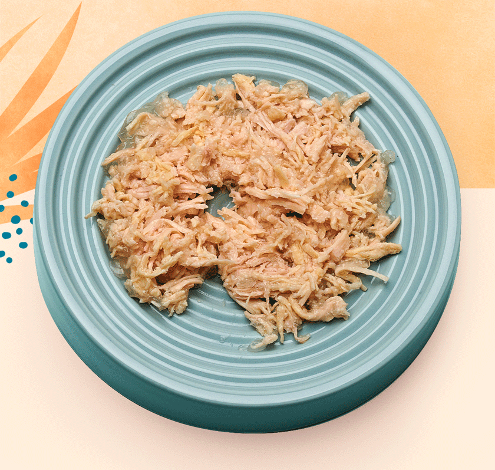

How UNTAMED COMPARES
We pet parents want to keep our cats healthy and happy for all nine of their lives. How can
we know we're feeding them the very best? See
how Untamed stacks up against other brands.
VIEW OUR RECIPES

Up to scratch?
Every cat needs animal protein, fats, vitamins, and minerals.
So how is Untamed doing vs. other big cat foods?
| Untamed | Sheba | Republic of Cats (ROC) | |
|---|---|---|---|
| Whole meats |
✅ 60%+ human grade whole meats |
❌ Meat derivatives, 4%+ real meat |
❌ Meat derivatives, 4%+ real meat |
| Sugars | ✅ No Added Sugars |
❌ Sugars |
❌ Sugars |
| Fillers | ✅ Grain, cereal and filler free |
✅ Animal protein |
✅ Fully recyclable and carbon neutral deliveries |
| Protein source | ❌ Grains |
❌ Vegetable protein |
❌ Plastics |
| Environmental impact |
❌ Grains |
❌ Vegetable protein |
❌ Plastics |